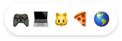
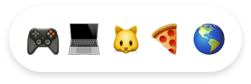

üòÉ About me
I’m a 20-year-old student living in the thriving city of Antwerp, Belgium. Interests of mine are branding, motion design, and you guessed it, UX design.
My passion for UX design started as a fun interest when I was around 14 years old. I came across a YouTube series where people could submit their work and get feedback from the host.
Even though 14 year old me didn’t have his own laptop, he still learnt a lot from just watching the series.
I used Paint.NET on my parents’ laptop to make my first designs. A couple years later, I finally got my own MacBook with Adobe XD and never stopped learning.
As of right now, I am getting my bachelor’s degree in ‘interactive multimedia design’ at Thomas More in Mechelen, Belgium. I will be graduating in February 2023.